AMBE 101 :: Lecture 32 :: MICROBIAL PRODUCTS

The term Industrial Microbiology refers to the use of microorganisms for industrial purposes. Such things as anticoagulants, antidepressants, vasodilators, herbicides, insecticides, plant hormones, enzymes, and vitamins have been isolated from microorganisms or produced in large quantities by genetically engineering the organisms with foreign genes. In commercial industrial plants, microorganisms are widely used to produce numerous organic materials that have far-reaching value and application.
Antibiotic production
These are defined as substances produced by some micro-organisms which are in some way lethal to other micro-organisms. It is thought that these substances give the organisms that produce them (usually moulds or actinomycetes - which grow slowly) some sort of advantage in competition with other micro-organisms (usually bacteria - which grow fast) in the same habitat. However, their great medical advantage in healing infections is that the purified forms of antibiotics are more or less harmless to most humans. This means that they must act on some aspect of of the growth of micro-organisms which differs from ordinary mammalian cells. There are in fact several versions of Penicillin, variations on a common formula, produced by different strains of Penicillium, or using different culture media and methods.
The Production of Antibiotics has been widespread since the pioneering efforts of Florey and Chain in 1938. The importance of antibiotics to medicine has led to much research into their discovery and production.
Identifying Useful Antibiotics
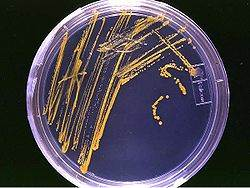
An agar plate streaked with microorganisms.
Despite the wide variety of known antibiotics, less than 1% of antimicrobial agents have medical or commercial value. For example, whereas penicillin has a high therapeutic index as it does not generally affect human cells, this is not so for many antibiotics. Other antibiotics simply lack advantage over those already in use, or have no other practical applications.
Useful antibiotics are often discovered using a screening process. To conduct such a screen, isolates of many different microorganisms are cultured and then tested for production of diffusible products that inhibit the growth of test organisms. Most antibiotics identified in such a screen are already known and must therefore be disregarded. The remainder must be tested for their selective toxicities and therapeutic activities, and the best candidates can be examined and possibly modified.
A more modern version of this approach is a rational design program. This involves screening directed towards finding new natural products that inhibit a specific target, such as an enzyme only found in the target pathogen, rather than tests to show general inhibition of a culture.
{kind=link}
Industrial Production Techniques
Antibiotics are produced industrially by a process of fermentation, where the source microorganism is grown in large containers (100,000–150,000 liters or more) containing a liquid growth medium. Oxygen concentration, temperature, pH and nutrient levels must be optimal, and are closely monitored and adjusted if necessary. As antibiotics are secondary metabolites, the population size must be controlled very carefully to ensure that maximum yield is obtained before the cells die. Once the process is complete, the antibiotic must be extracted and purified to a crystalline product. This is simpler to achieve if the antibiotic is soluble in organic solvent. Otherwise it must first be removed by ion exchange, adsorption or chemical precipitation.
Strains Used For Production
Microorganisms used in fermentation are rarely identical to the wild type. This is because species are often genetically modified to yield the maximum amounts of antibiotics. Mutation is often used, and is encouraged by introducing mutagens such as ultraviolet radiation, x-rays or certain chemicals. Selection and further reproduction of the higher yielding strains over many generations can raise yields by 20-fold or more. Another technique used to increase yields is gene amplification, where copies of genes coding for enzymes involved in the antibiotic production can be inserted back into a cell, via vectors such as plasmids. This process must be closely linked with retesting of antibiotic production and effectiveness.
WINE PRODUCTION
Winemaking, or Vinification, is the production of wine, starting with selection of the grapes or other produce and ending with bottling the finished wine. Although most wine is made from grapes, it may also be made from other fruit or non-toxic plant material. Mead is a wine that is made with honey being the primary ingredient after water.
Winemaking can be divided into two general categories: still wine production (without carbonation) and sparkling wine production (with carbonation).
The science of wine and winemaking is known as oenology (in American English, enology).
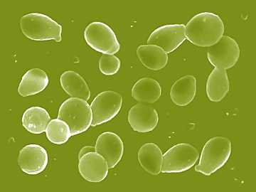
PROCESS
After the harvest, the grapes are taken into a winery and prepared for primary ferment, at this stage red wine making diverges from white wine making. Red wine is made from the must (pulp) of red or black grapes that undergo fermentation together with the grape skins. White wine is made by fermenting juice which is made by pressing crushed grapes to extract a juice; the skins are removed and play no further role. Occasionally white wine is made from red grapes, this is done by extracting their juice with minimal contact with the grapes' skins. Rosé wines are made from red grapes where the juice is allowed to stay in contact with the dark skins long enough to pick up a pinkish color, but little of the tannins contained in the skins.
To start primary fermentation yeast is added to the must for red wine or juice for white wine. During this fermentation, which often takes between one and two weeks, the yeast converts most of the sugars in the grape juice into ethanol (alcohol) and carbon dioxide. The carbon dioxide is lost to the atmosphere. After the primary fermentation of red grapes the free run wine is pumped off into tanks and the skins are pressed to extract the remaining juice and wine, the press wine blended with the free run wine at the wine makers discretion. The wine is kept warm and the remaining sugars are converted into alcohol and carbon dioxide. The next process in the making of red wine is secondary fermentation. This is a bacterial fermentation which converts malic acid to lactic acid. This process decreases the acid in the wine and softens the taste of the wine. Red wine is sometimes transferred to oak barrels to mature for a period of weeks or months, this practice imparts oak aromas to the wine. The wine must be settled or clarified and adjustments made prior to filtration and bottling.
The time from harvest to drinking can vary from a few months for Beaujolais nouveau wines to over twenty years for top wines. However, only about 10% of all red and 5% of white wine will taste better after five years than it will after just one year. Depending on the quality of grape and the target wine style, some of these steps may be combined or omitted to achieve the particular goals of the winemaker. Many wines of comparable quality are produced using similar but distinctly different approaches to their production; quality is dictated by the attributes of the starting material and not necessarily the steps taken during vinification.
Variations on the above procedure exist. With sparkling wines such as Champagne, an additional fermentation takes place inside the bottle, trapping carbon dioxide and creating the characteristic bubbles. Sweet wines are made by ensuring that some residual sugar remains after fermentation is completed. This can be done by harvesting late (late harvest wine), freezing the grapes to concentrate the sugar (ice wine), or adding a substance to kill the remaining yeast before fermentation is completed; for example, high proof brandy is added when making port wine. In other cases the winemaker may choose to hold back some of the sweet grape juice and add it to the wine after the fermentation is done, a technique known as süssreserve.
The process produces wastewater, pomace, and lees that require collection, treatment, and disposal or beneficial use.
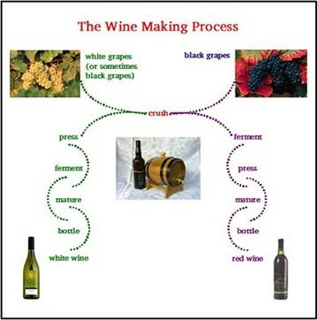
SINGLE CELL PROTEIN
Single cell protein (SCP) typically refers to sources of mixed protein extracted from pure or mixed cultures of algae, yeasts, fungi or bacteria (grown on agricultural wastes) used as a substitute for protein-rich foods, in human and animal feeds. 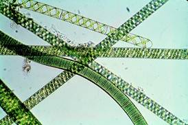 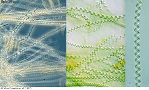
History
Early history Since 2500 BC yeasts have been used in bread and beverage production. In 1781 processes for preparing highly concentrated forms of yeast were established. In 1919 Endomyces vernalis yielded fats from sulphite liquor (from paper manufacture), and similarly in 1941 employing Geotrichum.
"Food from oil"
In the 1960s, researchers at British Petroleum developed what they called "proteins-from-oil process": a technology for producing single cell protein by yeast fed by waxy n-paraffins, a product produced by oil refineries. Initial research work was done by Alfred Champagnat at BP's Lavera Oil Refinery in France; a small pilot plant there started operations in March in 1963, and the same construction of the second pilot plant, at Grangemouth Oil Refinery in Britain, was authorized. The term SCP was coined in 1966 by Carol L. Wilson at MIT.
The "food from oil" idea became quite popular by the 1970s, with Champagnat being awarded the UNESCO Science Prize in 1976, and paraffin-fed yeast facilities being built in a number of countries. The primary use of the product was as poultry and cattle feed.
The Soviets were particularly enthusiastic, opening large "BVK" (belkovo-vitaminny kontsentrat, i.e., "protein-vitamin concentrate") plants next to their oil refineries in Kstovo (1973) and Kirishi (1974). The Soviet Ministry of Microbiological Industry had eight plants of this kind by 1989, when, pressured by the environmentalist movements, the government decided to close them down, or convert to some other microbiological processes.
SCP Production Process
Single cell proteins develop when microbes ferment waste materials (including wood, straw, cannery and food processing wastes, residues from alcohol production, hydrocarbons, or human and animal excreta). The problem with extracting single cell proteins from the wastes is the dilution and cost. They are found in very low concentrations, usually less than 5%. Engineers have developed ways to increase the concentrations including centrifugation, flotation, precipitation, coagulation and filtration, or the use of semi-permeable membranes.
The single cell protein needs to be dehydrated to approximately 10% moisture content and/or acidified to aid in storage and prevent spoilage. The methods to increase the concentrations to adequate levels, and de-watering process require equipment that is expensive and not always suitable for small-scale operations. It is economically prudent to feed the product locally and shortly after it is produced.
 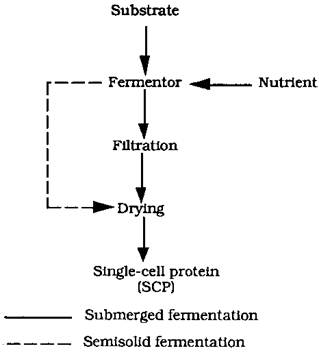
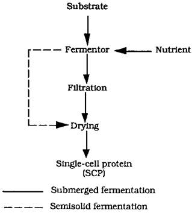
Examples:
Microbes employed include yeasts (Saccharomyces cerevisiae, Candida utilis=Torulopsis and Geotrichum candidum(=Oidium lactis)), other fungi (Aspergillus oryzae, Sclerotium rolfsii, Polyporus and Trichoderma), bacteria (Rhodopseudomonas capsulata). and algae (Chlorella and Spirulina). Typical yields of 43 to 56%, with protein contents of 44% to 60%.
The fungus Scytalidium acidophilum grows at below pH 1, offering advantages of:
- low-cost aseptic conditions,
- avoiding over 100-fold dilution of the acidic hydrolysates to pH values needed for other microbes
- after the biomass is harvested, the acids can be reused.
Commercial production of SCP (Spirulina) includes Cyanotech in Hawaii and Earthrise in California. TOPRINA- scp made from condidor lipolytica in uk PRUTEEN-SCP made from methanol. TORUTEIN- SCP made from ethanol using torula yeast.
Advantages of Production of SCP
Large-scale production of microbial biomass has many advantages over the traditional methods for producing proteins for food or feed.
1. Microorganisms have a high rate of multiplication to hence rapid succession of generation (algae: 2-6 hours, yeast: 1-3 hours, bacteria: 0.5-2 hours)
2. They can be easily genetically modified for varying the amino acid composition.
3. A very high protein content 43-85 % in the dry mass.
4. They can utilize a broad spectrum of raw materials as carbon sources, which include even waste products. Thus they help in the removal of pollutants also.
5. Strains with high yield and good composition can be selected or produce relatively easily.
6. Microbial biomass production occurs in continuous cultures and the quality is consistent since the growth is independent of seasonal and climatic variations.
7. Land requirements is low and is ecologically beneficial.
8. A high solar energy conversion efficiency per unit area.
9. Solar energy conversion efficiency can be maximized and yield can be enhanced by easy regulation of physical and nutritional factors.
10. Algal culture can be done in space which is normally unused and so there is no need to compete for land.
Microbes in Cheese and Yoghurt
Milk Protein Consists of proteins, lipids, lactose, minerals, vitamins and Enzymes such as oxidases, phosphatases, peroxidases, catalases, amylases and lipases.Casein makes up 80% of the milk proteincasein is precipitates along with other components when acidified. Milk clotting is done with rennet (chymosin) Rennet hydrolyses the bond between phenylalanine and methionine.
CHEESE TYPE |
EXAMPLE |
Soft cheese |
Cambridge, Bondon |
NORMAL FLORA OF CHEESE MILK
- Corynebacteria
- Micrococci
- Enterococci
- Spores of Bacillus and Clostridium
- Staphylococci
- Coliforms
- Lactic acid bacteria
- Lactobacilli
- Pediococci
- Leuconostocs
- Lactobacilli
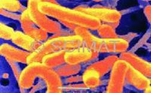 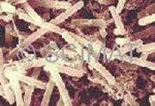
L. casei L.acidophilus
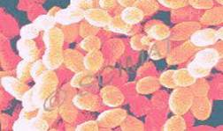 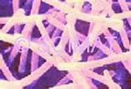
Streptococcus salivaricus L.delbrueckii
PROCESS OF CHEESEMAKING: -
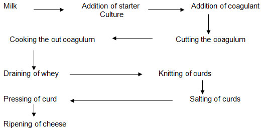
Yoghurt or yogurt is a dairy product produced by bacterial fermentation of milk. Fermentation of lactose produces lactic acid, which acts on milk protein to give yoghurt its texture and its characteristic tang. Dairy yoghurt is produced using a culture of Lactobacillus delbrueckii subsp. bulgaricus and Streptococcus salivarius subsp. thermophilus bacteria. The milk is heated to about 80 °C to kill any undesirable bacteria and to change the milk proteins so that they set together rather than form curds. It is then cooled to about 45 °C. The bacteria culture is added, and this temperature is maintained for 4 to 7 hours for fermentation. Soy yoghurt, a non-dairy yoghurt alternative, is made from soy milk.
People have been making and eating yogurt for at least 5,400 years. Today, it is a common food item throughout the world. A nutritious food with unique health benefits, it is rich in protein, calcium, riboflavin, vitamin B6 and vitamin B12.[1]
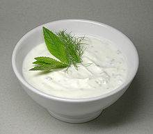
History
There is evidence of precultured milk products being produced as food for at least 4,500 years. The earliest yoghurts were probably spontaneously fermented by wild bacteria.
The oldest writings mentioning yogurt are attributed to Pliny the Elder, who remarked that certain nomadic tribes knew how "to thicken the milk into a substance with an agreeable acidity".[7] The use of yoghurt by medieval Turks is recorded in the books Diwan Lughat al-Turk by Mahmud Kashgari and Kutadgu Bilig by Yusuf Has Hajib written in the 11th century.[8][9] Both texts mention the word "yoghurt" in different sections and describe its use by nomadic Turks.[8][9] An early account of a European encounter with yoghurt occurs in French clinical history: Francis I suffered from a severe diarrhoea which no French doctor could cure. His ally Suleiman the Magnificent sent a doctor, who allegedly cured the patient with yoghurt.[10][11] Being grateful, the French king spread around the information about the food which had cured him.
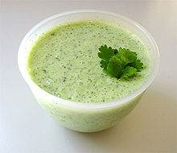
Raita is a condiment made with yoghurt and popular in India and Pakistan. Until the 1900s, yoghurt was a staple in diets of people in the Russian Empire (and especially Central Asia and the Caucasus), Western Asia, South Eastern Europe/Balkans, Central Europe, and India. Stamen Grigorov (1878–1945), a Bulgarian student of medicine in Geneva, first examined the microflora of the Bulgarian yoghurt. In 1905 he described it as consisting of a spherical and a rod-like lactic acid bacteria. In 1907 the rod-like bacteria was called Lactobacillus bulgaricus (now Lactobacillus delbrueckii subsp. bulgaricus). The Russian Nobel laureate biologist Ilya Ilyich Mechnikov, from the Institut Pasteur in Paris, was influenced by Grigorov's work and hypothesised that regular consumption of yoghurt was responsible for the unusually long lifespans of Bulgarian peasants. Believing Lactobacillus to be essential for good health, Mechnikov worked to popularise yoghurt as a foodstuff throughout Europe.
Isaac Carasso industrialized the production of yoghurt. In 1919, Carasso, who was from Ottoman Salonika, started a small yoghurt business in Barcelona and named the business Danone ("little Daniel") after his son. The brand later expanded to the United States under an Americanised version of the name: Dannon.
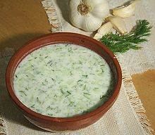

Tarator is a cold, refreshing soup made of yoghurt and cucumber (dill, garlic, walnuts and sunflower oil are sometimes added), popular in Bulgaria. Yoghurt with added fruit jam was patented in 1933 by the Radlická Mlékárna dairy in Prague. It was introduced to the United States in 1947, by Dannon.
Yoghurt was first introduced to the United States by Armenian immigrants Sarkis and Rose Colombosian, who started "Colombo and Sons Creamery" in Andover, Massachusetts in 1929.[13][14] Colombo Yogurt was originally delivered around New England in a horse-drawn wagon inscribed with the Armenian word "madzoon" which was later changed to "yogurt", the Turkish name of the product, as Turkish was the lingua franca between immigrants of the various Near Eastern ethnicities[citation needed] who were the main consumers at that time. Yoghurt's popularity in the United States was enhanced in the 1950s and 1960s, when it was presented as a health food. By the late 20th century yoghurt had become a common American food item and Colombo Yogurt was sold in 1993 to General Mills, which discontinued the brand in 2010.[15]
Nutritional value and health benefits
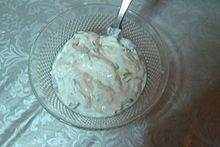

Tzatziki is an appetiser made with yoghurt, popular in Greece and Bulgaria, where it is called Dry Tarator. Yoghurt is nutritionally rich in protein, calcium, riboflavin, vitamin B6 and vitamin B12. It has nutritional benefits beyond those of milk. People who are moderately lactose-intolerant can consume yoghurt without ill effects, because much of the lactose in the milk precursor is converted to lactic acid by the bacterial culture. Yoghurt may also be used in preventing antibiotic-associated diarrhea. Yoghurt is believed to promote good gum health, possibly because of the effect of lactic acid present in yoghurt.
A study published in the International Journal of Obesity (11 January 2005) also found that the consumption of low-fat yoghurt can promote weight loss, especially due to the calcium in the yoghurt.
{kind=link}
Varieties and presentation
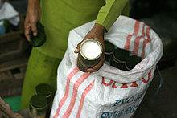

Dadiah sold in Bukittinggi Market Dadiah, or Dadih, is a traditional West Sumatran yoghurt made from water buffalo milk. It is fermented in bamboo tubes. Yoghurt is popular in Nepal, where it is served both as an appetizer and dessert. Locally called dahi, it is a part of the Nepali culture, used in local festivals, marriage ceremonies, parties, religious occasions, family gatherings, and so on. The most famous type of Nepalese yoghurt is called juju dhau, originating from the city of Bhaktapur.
Tarator and Cacık are popular cold soups made from yoghurt, popular during summertime in Albania, Bulgaria, Republic of Macedonia, and Turkey. They are made with ayran, cucumbers, dill, salt, olive oil, and optionally garlic and ground walnuts. Tzatziki, a thick yoghurt-based sauce similar in concoction to tarator, is popular in Greece. Bulgaria typically calls tzatziki "dry tarator".
Khyar w Laban (cucumber and yogurt salad) is a popular dish in Lebanon. Also, a wide variety of local Lebanese dishes are cooked with yogurt like "Kibbi bi Laban" etc..
Rahmjoghurt, a creamy yoghurt with much higher fat content (10%) than most yoghurts offered in English-speaking countries (Rahm is German for "cream"), is available in Germany and other countries.
Cream-top yoghurt is yoghurt made with unhomogenized milk. A layer of cream rises to the top, forming a rich yoghurt cream. Cream-top yoghurt was first made commercially popular in the United States by Brown Cow of Newfield, New York, bucking the trend toward low- and non-fat yoghurts. Jameed is yoghurt which is salted and dried to preserve it. It is popular in Jordan. Zabadi is the type of yoghurt made in Egypt, usually from the milk of the Egyptian water buffalo. It is particularly associated with Ramadan fasting, as it is thought to prevent thirst during all-day fasting.
Raita is a yoghurt-based South Asian/Indian condiment, used as a side dish. The yoghurt is seasoned with cilantro (coriander), cumin, mint, cayenne pepper, and other herbs and spices. Vegetables such as cucumber and onions are mixed in, and the mixture is served chilled. Raita has a cooling effect on the palate which makes it a good foil for spicy Indian dishes. Dudh is a Sindhi-curd, popular in India. People drink dudh along with food at intervals, to help digestion and make food more delicious. In some places dudh is also served with plain rice. Dahi is a yoghurt of the Indian subcontinent, known for its characteristic taste and consistency. The word dahi seems to be derived from the Sanskrit word dadhi, one of the five elixirs, or panchamrita, often used in Hindu ritual. Dahi also holds cultural symbolism in many homes in the Mithilanchal region of Bihar. It is found in different flavours, two of which are famous: sour yoghurt (tauk doi) and sweet yoghurt (meesti or podi doi). In India, it is often used in cosmetics mixed with turmeric and honey. Sour yoghurt is also used as a hair conditioner by women in many parts of India.
Srikhand, a popular dessert in India, is made from drained yoghurt, saffron, cardamom, nutmeg and sugar and sometimes fruits such as mango or pineapple.
Sweetened and flavored yoghurt
To offset its natural sourness, yoghurt can be sold sweetened, flavored or in containers with fruit or fruit jam on the bottom.[21] If the fruit has been stirred into the yoghurt before purchase, it is commonly referred to as Swiss-style.[22] Most yoghurts in North America] have added pectin, found naturally in fruit, and/or gelatin to artificially create thickness and creaminess at lower cost. This type of adulterated product is also marketed under the name Swiss-style, although it is unrelated to the way yoghurt is eaten in Switzerland. Some yoghurts, often called "cream line," are made with whole milk which has not been homogenized so the cream rises to the top. Fruit jam is used instead of raw fruit pieces in fruit yoghurts to allow storage for weeks. Sweeteners such as cane sugar or sucralose – for low-calorie yogurts – are often present in large amounts in commercial yoghurt. In the USA, sweetened, flavored yoghurt is the most popular type, typically sold in single-serving plastic cups. Typical flavors are vanilla, honey, or fruit such as strawberry, blueberry, blackberry, raspberry, or peach.
Strained yoghurts
Strained yoghurts are types of yoghurt which are strained through a paper or cloth filter, traditionally made of muslin, to remove the whey, giving a much thicker consistency and a distinctive, slightly tangy taste.
Labneh is a strained yoghurt used for sandwiches popular in Arab countries. Olive oil, cucumber slices, olives, and various green herbs may be added. It can be thickened further and rolled into balls, preserved in olive oil, and fermented for a few more weeks. It is sometimes used with onions, meat, and nuts as a stuffing for a variety of pies or kebbeh balls. Some types of strained yoghurts are boiled in open vats first, so that the liquid content is reduced. The popular East Indian dessert, a variation of traditional dahi called mishti dahi, offers a thicker, more custard-like consistency, and is usually sweeter than western yoghurts. Strained yoghurt is also enjoyed in Greece and is the main component of tzadziki, a well-known accompaniment to gyros and souvlaki pita sandwiches.
YOGURT PRODUCTS:
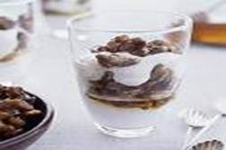 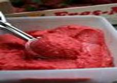
Fruit-on-the-bottom style Soft-serve and Hard Pack frozen yogurt
| Download this lecture as PDF here |